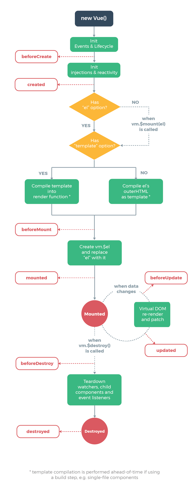

官网在介绍生命周期的时候，给出了图示，并且说你不需要立马弄明白所有的东西，不过随着你的不断学习和使用，它的参考价值会越来越高。第一次看图的时候，简单浏览。后面找到一些实际项目来看发现钩子函数的定义十分常见，而自己对于钩子函数是哪个阶段起作用认识很模糊，便回头重新理解生命周期图，遂有此文。
生命周期

| Vue1.0+ | Vue2.0 | 描述 |
|---|---|---|
| init | beforeCreate | 组件实例刚被创建，组件属性计算之前，如data属性 |
| created | created | 组件实例创建完成，属性已绑定，但DOM还未生成，$el属性还不存在 |
| beforeCompile | beforeMount | 模板编译/挂载之前 |
| compiled | mounted | 模板编译/挂载之后 |
| ready | mounted | 模板编译/挂载之后 |
| – | beforeUpdate | 组件更新之前。数据更新时调用，发生在虚拟DOM重新渲染和打补丁之前。 |
| – | updated | 组件更新之后，由于数据更改导致的虚拟DOM重新渲染和打补丁之后调用。 |
| – | activated | keep-alive 组件被激活时调用 |
| – | deactivated | keep-alive 组件停用时调用 |
| attached | – | 弃用了 |
| detached | – | 弃用了 |
| beforeDestory | beforeDestory | 实例销毁前调用，实例仍然完全可用 |
| destoryed | destoryed | 实例销毁之后 |
辅助实例
下面我们结合实例对于生命周期的各个阶段进一步理解。
1 | var app = new Vue({ |
将代码保存为hook.html，拖入浏览器运行，在控制台看到以下信息：
create和mounted
beforeCreateel与data都未初始化；createddata初始化完成，el仍未初始化；beforeMountel初始化，但el中的元素<p></p>，节点已产生，但message还没有渲染进去。mountedel初始化完成，message完成渲染。
update
在控制台更新app.message触发beforeUpdate与updated钩子函数，beforeUpdate时，el中的message就已经替换成了更改之后的。
destory
分别在beforeDestroyed与destroyed钩子函数中更改message的内容，打印出来的结果显示message可以更改，但没有触发update的动作，DOM没有重新渲染。在Vue实例被销毁后，实例不存在了，对message的更改是无效的。
使用总结
beforeCreate： 这时data\watcher\methods都是没有的。只有$route对象是存在的，可以根据路由进行重定向之类的操作。created：在这步，实例已完成了数据观测，属性和方法的运算，watch/event事件毁掉。$el属性目前不可见。可向后台接口发送数据请求，根据返回改变data。beforeMount：render函数首次被调用，页面渲染时所需的数据，要尽量在这阶段之前完成赋值。mounted：创建vm.$el并替换el，挂载到实力上。依赖于DOM的代码放在这里，比如监听DOM事件。beforeUpdate：虚拟DOM重新渲染和打补丁之前被调用。可在这里进一步修改$vm.data。updated：可以继续执行依赖DOM的操作。beforeDestroy：在这里实例仍然可用，没想好有什么特别的可以放在这里操作。destroyed: 实例删除之后，给提示。